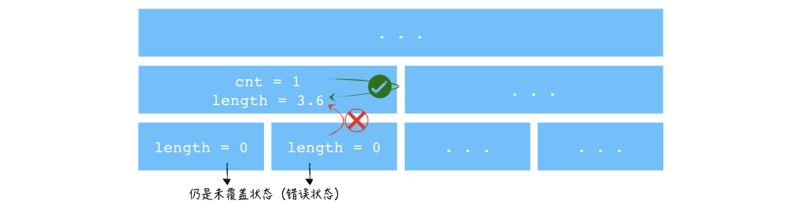
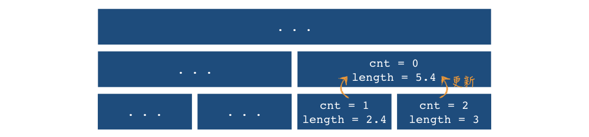

关于扫描线算法中线段树标记的理解
由于扫描线算法的询问只需询问线段树根节点信息，我们没有必要写 pushdown 函数，但同时也引入了一些其他问题。本文记录我做题过程中的理解，水平有限，如有错误，烦请指正。
算法简述
扫描线算法用于解决矩形面积并的问题，当然其思想也可用于其他形状的图形和其他问题。
在矩形面积并问题中：
用一条平行于 $x$ 轴的直线自下而上地扫描平面，每扫描到一条矩形的边，就计算这条边和上一条边之间的面积。线段树在这个过程中维护当前扫描线被覆盖的长度。具体地，每扫描到一个矩形的下边，其对应区间就加 $1$；每扫描到一个矩形的上边，其对应区间减 $1$，询问时统计整个区间非零的长度。
为完成上述操作，每个线段树节点储存一个标记 cnt 和一个信息 length：cnt 标记表示该节点对应区间被覆盖了几次； length 表示该节点对应区间的被覆盖长度，也即非零长度。
pushdown 对 cnt 标记的影响
由于没有 pushdown 的存在，这里的 cnt 标记比有 pushdown 的线段树的标记的情形复杂一些。
想一想有 pushdown 操作的线段树，我们如果要对某节点进行操作，会先将其祖先节点的标记一路下放下来，所以我们在操作这个节点时，其祖先节点时没有标记的；随后我们就可以顺理成章地把信息一路 pushup 回去——祖先节点都没有标记了，它的信息只依赖于子节点的信息。
而对于没有 pushdown 操作的线段树，某节点的信息不能只靠子节点的信息决定，还由其自身的标记决定。如下图所示，本题中，线段树某节点的 cnt 加 $1$ 后，由于没有 pushdown，其子节点完全不知道自己已经被覆盖了，子节点的信息——比如 length ——仍然是之前的状态。用这个子节点的 length 去更新父节点的 length，显然是错误的。但是结合父节点的 cnt 标记，我们可以知道父节点整个都被覆盖了，于是我们就可以正确地把父节点的 length 赋值为整个区间长度。当然此时此刻，子节点的存储信息是错误信息——但这又有什么关系呢？反正我们只询问根节点信息，只需要保证父节点信息的正确性即可。（自然，这个“父节点”也是某节点的“子节点”，它的信息也可能是错误的；不过，根节点不作为任何节点的子节点，信息一定正确。）

上一段阐述的是自身标记的重要性，但是事实上子节点的信息也是不可缺少的。考虑我们把某节点的两个子节点分两次覆盖住，那么这个节点被覆盖住了，但是 cnt 却为 0。更一般的，cnt == 0 的节点完全有可能整个都被覆盖了，甚至覆盖了好几次，甚至分段覆盖次数还不一样。所以，当父节点的 cnt 标记为 0 时，它的信息需要用其子节点的信息来更新（如下图所示）。当然，这时子节点的信息是局部（相对于父节点）正确的（尽管可能是整体错误的）。

综上所述，cnt == 0 时，length 为左右子节点的 length 之和；而 cnt > 0 时，length 是该节点的对应区间长度。
于是，我们的 pushup 应运而生：
1 | inline void pushup(int id){ |
同时，使用 pushup 的时机也要微调——在打了标记之后也需要立刻 pushup。
矩形面积并的模板如下：
1 |
|
进一步
与其说 cnt 标记表示“该节点对应区间被覆盖了几次”，不如说：
cnt == 0表示我们对该节点对应区间一无所知——它可能没被覆盖，可能部分覆盖，可能全被覆盖，甚至覆盖次数还不同……我们要知道这个节点的length信息，只能从其子节点pushup上来；cnt == 1表示这个节点对应区间被覆盖至少 $1$ 次——当然也可能覆盖了多次，或者分成好几段覆盖了不同次——但总之被完全覆盖了，length就是对应区间长度。同时它的子节点并不知道它的覆盖情况。
这样的理解是有好处的，比如说我们遇到了加强版的题目：hdu 1255 覆盖的面积
题目要求求出被矩形覆盖过至少两次的区域面积。我们在线段树节点中维护一个标记 cnt，两个信息 length1,length2，分别表示区间被覆盖至少 $1$ 次的长度和被覆盖至少 $2$ 次的长度。于是：
cnt == 0表示我们对该节点对应区间一无所知，它的length1,length2信息由子节点决定；cnt == 1表示这个节点对应区间被覆盖至少 $1$ 次，它的length1就是区间长度，length2是左右子节点的length1之和——该节点对应区间整个已经被覆盖至少一次了（子节点并不知道），只需要子节点再覆盖一次就好；cnt >= 2表示这个节点对应区间被覆盖至少 $2$ 次，它的length1,length2都是区间长度。
pushup 如下：
1 | inline void pushup(int id){ |
AC 代码如下：
1 |
|
再加强
三维空间，首先我们循环 $z$ 坐标，就可以转化成平面上求被覆盖至少三次的矩形面积。有了上述理解，就可以容易地写出代码了：
1 |
|
关于扫描线算法中线段树标记的理解
http://xyfjason.github.io/blog-xcpc/2020/02/12/关于扫描线算法中线段树标记的理解/